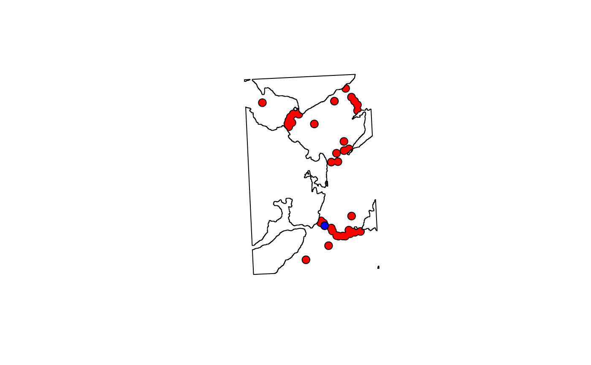

This function defines the areas surveyed by receivers (termed `detection containers') as a spatial object, based on an estimate of the detection range (m) and any barriers to detection. To implement the function, receiver locations must be supplied as a SpatialPoints or SpatialPointsDataFrame object with the Universe Transverse Mercator coordinate reference system. The function defines a spatial buffer around each receiver according to the estimated detection range, cuts out any barriers to detection, such as the coastline, and returns a SpatialPolygons object that defines the combined detection container across all receivers or receiver-specific detection containers.
get_detection_containers( xy, detection_range = 425, resolution = 1000, boundaries = NULL, coastline = NULL, plot = TRUE, ... )
Arguments
| xy | A |
|---|---|
| detection_range | A number that defines the detection range (m) of receivers. |
| resolution | A number that defines the number of linear segments used to approximate the detection container (see the |
| boundaries | An |
| coastline | (optional) A |
| plot | A logical input that defines whether or not to plot receivers, their containers, and the buffer (if specified). |
| ... | Additional arguments passed to |
Value
The function returns a SpatialPolygons-class object of the detection containers around receivers that represents the area they survey under the assumption of a constant detection range, accounting for any barriers to detection. By default, this will contain a single feature, which is suitable for the calculation of the total area surveyed by receivers (see get_detection_area_sum) because it accounts for the overlap in the detection ranges of receivers. However, if byid = TRUE is passed via ... to gBuffer, the returned object will have a feature for each pair of coordinates in xy (i.e., receiver). This is less appropriate for calculating the area surveyed by receivers, since areas surveyed by multiple receivers will be over-counted, but it is suitable when the containers for particular receivers are required (e.g., to extract environmental conditions within a specific receiver's detection range) (see get_detection_containers_envir).
Author
Edward Lavender
Examples
#### Define receiver locations as a SpatialPoints object with a UTM CRS proj_wgs84 <- sp::CRS(SRS_string = "EPSG:4326") proj_utm <- sp::CRS(SRS_string = "EPSG:32629") xy <- sp::SpatialPoints(dat_moorings[, c("receiver_long", "receiver_lat")], proj_wgs84) xy <- sp::spTransform(xy, proj_utm) #### Example (1): Get the simplest containers around receivers get_detection_containers(xy)#> class : SpatialPolygons #> features : 1 #> extent : 699188.2, 710830.8, 6249818, 6269562 (xmin, xmax, ymin, ymax) #> crs : +proj=utm +zone=29 +datum=WGS84 +units=m +no_defs#### Example (2): Account for barriers in the study area get_detection_containers(xy, coastline = dat_coast)#> class : SpatialPolygons #> features : 1 #> extent : 699188.2, 710830.8, 6249818, 6269558 (xmin, xmax, ymin, ymax) #> crs : +proj=utm +zone=29 +datum=WGS84 +units=m +no_defs#### Example (3): Adjust the detection range get_detection_containers(xy, detection_range = 400, coastline = dat_coast)#> class : SpatialPolygons #> features : 1 #> extent : 699213.2, 710805.8, 6249843, 6269536 (xmin, xmax, ymin, ymax) #> crs : +proj=utm +zone=29 +datum=WGS84 +units=m +no_defsget_detection_containers(xy, detection_range = 500, coastline = dat_coast)#> class : SpatialPolygons #> features : 1 #> extent : 699113.2, 710905.8, 6249743, 6269629 (xmin, xmax, ymin, ymax) #> crs : +proj=utm +zone=29 +datum=WGS84 +units=m +no_defs#### Example (4): Suppress the plot get_detection_containers(xy, coastline = dat_coast, plot = FALSE)#> class : SpatialPolygons #> features : 1 #> extent : 699188.2, 710830.8, 6249818, 6269558 (xmin, xmax, ymin, ymax) #> crs : +proj=utm +zone=29 +datum=WGS84 +units=m +no_defs#### Example (5): Output characteristics are controlled via byid # A SpatialPolygons object with one feature is the implicit output sp_1 <- get_detection_containers(xy, coastline = dat_coast, byid = FALSE)sp_1#> class : SpatialPolygons #> features : 1 #> extent : 699188.2, 710830.8, 6249818, 6269558 (xmin, xmax, ymin, ymax) #> crs : +proj=utm +zone=29 +datum=WGS84 +units=m +no_defs# A SpatialPolygons object with one feature for each element in xy # ... can be returned via byid = TRUE sp_2 <- get_detection_containers(xy, coastline = dat_coast, byid = TRUE)sp_2#> class : SpatialPolygons #> features : 40 #> extent : 699188.2, 710830.8, 6249818, 6269558 (xmin, xmax, ymin, ymax) #> crs : +proj=utm +zone=29 +datum=WGS84 +units=m +no_defs# The total area of the former will be smaller, since areas covered # ... by multiple receivers are merged rgeos::gArea(sp_1); rgeos::gArea(sp_2)#> [1] 16335577#> [1] 21992939# But it can be more convenient to use the latter format in some cases # ... because it is easy to isolate specific containers: raster::plot(dat_coast)